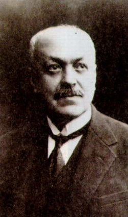

Italo
Svevo
Aron Hector Schmitz, il futuro
Italo Svevo, nasce a Trieste il 19 dicembre 1861 da Francesco Schmitz (figlio
del funzionario imperiale austriaco Adolfo Schmitz e della trevigiana Rosa
Macerata) e da Allegra Moravia, quinto di otto figli: Paola, Natalia, Noemi,
Adolfo, Ettore, Elio, Ortensia e Ottavio. Trascorre l'infanzia a Trieste
nella casa patriarcale di Corsia Stadion libero da preoccupazioni economiche
ed in un'atmosfera gaia e affettuosa malgrado il padre, che, commerciante
nel ramo vetrario, non era molto incline alle affettuosità, in particolare
nel rapporto con i figli. In questo periodo Trieste fa ancora parte dell'impero
austro-ungarico, nonostante la massiccia presenza degli irredentisti che
vorrebbero annetterla al neonato regno d'Italia. Francesco, pur sentendosi
italiano, ammira la cultura tedesca. Volendo che i figli diventino esperti
uomini d'affari manda all'età di dodici anni Ettore e i due fratelli
Adolfo ed Elio a studiare in collegio a Segnitz, presso Wurtzburg in Baviera,
perchè credeva che il tedesco fosse una lingua indispensabile per
ogni commerciante triestino. Elio non regge ai rigori del clima e della
disciplina perciò presto rientra in famiglia. Nei pochi mesi trascorsi
a Segnitz Elio tiene un diario che ci è oggi prezioso per comprendere
la vocazione letteraria del fratello. Ettore riesce invece ad acclimatarsi,
ed in pochi mesi impara la lingua, appassionandosi alla letteratura di
quel paese (legge Schopenhauer, Jean Paul, Richter e in traduzione Shakespeare
e Turgenev), tanto da essere addirittura in grado di scrivere una tesina
filosofica in tedesco in aperta polemica con il suo compagno di studi Bratter.
Poco incline ai commerci inizia a scrivere dando vita con i compagni di
studi ad un circolo culturale. In questo periodo conosce anche il primo
amore: quello per Anna Hertz, della quale scriverà in L'avvenire
dei ricordi. Nel 1878, terminati gli studi, ritorna a Trieste, dove s'iscrive
all'istituto commerciale Giuseppe Revoltella, peraltro senza troppo entusiasmo.
In realtà, le sue aspirazioni segrete sono la letteratura ed un
viaggio a Firenze per apprendere dal vivo una corretta lingua e pronuncia
italiana. L'educazione tedesca e l'utilizzo del dialetto triestino, infatti,
non gli hanno permesso di acquisire una soddisfacente padronanza dell'italiano,
lingua cui peraltro non fu mai disposto a rinunciare. Il 2 settembre 1880
dà inizio ad una collaborazione con il giornale irredentista triestino
"L' Indipendente" sul quale, per dieci anni, pubblicherà recensioni
teatrali ed articoli di vario genere con lo pseudonimo di Ettore Samigli.
Intanto abbozza ben quattro testi teatrali che non avranno successo: nel
febbraio la commedia Ariosto Governatore, nel marzo Il primo amore, nel
luglio Le Roi est mort; vive le Roi! e successivamente I due poeti. Nello
stesso anno il fallimento del padre lo costringe ad impiegarsi quale corrispondente
tedesco e francese presso la succursale triestina della banca Union. Le
difficoltà materiali si moltiplicano, ma non indeboliscono la sua
passione per la letteratura. Molte ore del suo tempo libero le sottrae
al riposo per frequentare la biblioteca civica dove legge i classici italiani,
Schiller, Balzac e Zola. Nel febbraio 1981 lavora ad una novella dal titolo
Difetto moderno, scrive poi La storia dei miei lavori e in marzo la novella
I tre caratteri che verrà poi intitolata La gente superiore. In
questo periodo conosce e diviene amico fraterno del diciannovenne pittore
Umberto Veruda che gli ispirerà il personaggio dello scultore Balli
nel romanzo Senilità. Nel 1886 il dolore per la malattia e la morte
del fratello Elio segnano profondamente il suo animo. Nel 1890 "L'Indipendente"
pubblica a puntate il lungo racconto L'assassinio di via Belpoggio che
testimonia la forte influenza di Schopenhauer . Il racconto viene accolto
dal pubblico e dalla critica senza particolare entusiasmo. Sono anni di
grandi cambiamenti per la vita di Ettore, infatti, nell'aprile del 1892
gli muore il padre. Nello stesso anno pubblica a sue spese presso l'editore
Ettore Vram di Trieste, il primo romanzo, dandogli come titolo Una Vita
e datandolo 1893. Lo firma con lo pseudonimo di Italo Svevo che sta a significare
nello stesso tempo la sua appartenenza alla cultura italiana, tedesca e
slava. In giugno riceve una lettera di elogi dallo scrittore tedesco Paul
Heise, che sarà più tardi premio Nobel. Il libro passa pressoché
inosservato: appare solo una breve recensione di Domenico Oliva sul "Corriere
della Sera"e qualche articolo sulla stampa cittadina. Nel 1895 gli muore
anche la madre. In questo periodo rivede, dopo anni, la cugina diciottenne
Livia Veneziani con la quale instaura una tenera amicizia. Tra i due ben
presto nasce qualcosa di più e, contro la volontà dei futuri
suoceri, si fidanzano ufficialmente. Il 30 luglio 1896 si sposano e l'anno
successivo hanno una bambina che chiamano Letizia. Intanto continua il
travagliato rapporto tra Italo Svevo, lo scrittore che spera nel successo
ed Ettore Schmitz, ormai coscienzioso padre di famiglia che affianca al
lavoro in banca, l'insegnamento all'istituto Revoltella ed un lavoro notturno
al quotidiano "Il Piccolo". Dal 15 giugno al 16 settembre 1898 appare a
puntate sull'Indipendente il suo secondo romanzo, Senilità, che
nello stesso anno uscirà in volume presso l'editore Vram ancora
una volta a spese dell'autore. L'opera subisce la stessa sorte delle precedenti,
Svevo riceve anche una lettera da Paul Heise che questa volta esprime un
giudizio negativo sul libro. Ettore giura a se stesso di smetterla per
sempre con la letteratura e s'immerge nella lettura di Ibsen, Dovstoevskij
e Tolstoj, quasi a cercarvi un risarcimento per le sue frustrazioni di
autore. Nel 1899 Ettore lascia la banca Union per affiancare il suocero
Gioacchino Veneziani nella direzione della sua fabbrica di vernici sottomarine.
Le sue condizioni economiche migliorano: il successo che aveva invano cercato
nell'arte gli viene dagli affari dai quali ha anche la possibilità
di andare spesso in Francia ed in Inghilterra. Nel 1904 muore l'amico pittore
Umberto Veruda. E' dell'anno seguente l' incontro e l'amicizia con James
Joyce, professore d'inglese alla Berlitz School di Trieste, che gli
dà lezioni private. Il rapporto tra i due scrittori diviene ben
presto di stima confidenziale: Joyce gli legge i suoi lavori manoscritti
e Svevo dà in lettura al futuro autore di Ulysses i suoi due romanzi
pubblicati, sui quali l'inglese si esprime entusiasticamente. Nel 1915,
scoppiata la I guerra mondiale che gli irredentisti triestini chiameranno
"quarta guerra d'indipendenza", Ettore si trova improvvisamente solo in
una Trieste abbandonata: Joyce costretto a tornare in Inghilterra, i suoceri
trasferitisi, la fabbrica confiscata, non gli restano altro che il riposo
e le sue vecchie passioni, cioè la lettura e lo studio del violino.
Durante questo periodo approfondisce soprattutto Swift, s'incontra con
gli amici irredentisti al Caffè Tergesteo e comunica epistolarmente
con Joyce che si è stabilito a Zurigo. Nel 1918, anno in cui finalmente
Trieste diventa italiana, traduce, più che altro per assecondare
il nipote medico che a causa di una malattia è suo ospite, l'opera
Sul sogno di Sigmund Freud. E' una buona
occasione per studiare le idee dello psicanalista tedesco che, peraltro,
egli aveva già avuto modo di conoscere. In quello stesso anno diviene
membro del comitato di salute pubblica, lavora ad un progetto di pace universale
e, alla liberazione di Trieste, collabora con il neonato quotidiano "La
Nazione". Ancora una volta Ettore Schmitz cede a quello che definisce un
imperativo del proprio animo e riveste i panni di Italo Svevo cominciando,
dopo quasi vent'anni di astinenza, a scrivere le prime pagine di La
coscienza di Zeno. Scrivere, in questo momento rappresenta per lui
un modo di autoanalizzarsi, un tentativo di guarire da quel "male di vivere"
che lo accomuna al protagonista dell'opera. Non è importante pubblicare
quello che si scrive, a suo parere, ma è impossibile fare a meno
di scriverlo. Il libro sarà pubblicato solo nel 1923 ed ancora una
volta la particolare sensibilità di quest'autore passerà
pressoché inosservata, pur essendo molto apprezzata dall'amicoJames
Joyce, che Italo ha da poco rivisto a Parigi. Joyce che aveva pubblicizzato
Svevo presso i suoi amici critici e letterati parigini, riesce a far sì
che la critica francese (Larbaud, Crémieux) s'interessi a lui. L'operazione
di Joyce va a buon fine e nel 1925 Svevo riceve la prima lettera di Larbaud,
che gli fa concrete proposte per il lancio del romanzo in Francia. Nella
primavera incontra a Parigi i suoi estimatori e si lega di amicizia confidenziale
particolarmente con la signora Crémieux, che gli parla di Proust,
autore a lui sconosciuto e del quale acquista l'opera completa. Bobi Bazlen
fa conoscere ad Eugenio Montale i romanzi di Svevo, e nel numero IV della
rivista "L'Esame" il poeta pubblica il primo dei suoi scritti sveviani.
Nel 1926 escono su "Le Navire d'argent" larghi estratti delle sue opere.
L'evento trascina l'interesse della critica francese ed italiana. Ettore
Schmitz, l'uomo d'affari, può finalmente vestire a tempo pieno i
panni di Italo Svevo, il geniale romanziere e sulla scia di questo scrive
ancora: La madre, Una burla riuscita, Vino generoso e La novella del buon
vecchio e della bella fanciulla. Nel 1927 appare ledizione francese deLa
coscienza di Zeno, nella traduzione di Paul-Henri Michel. Nel marzo
di quell'anno il "Convegno" di Milano ospita una sua conferenza su Joyce,
ed in aprile va in scena al Teatro degli Indipendenti di A. G. Bragaglia,
a Roma, il suo atto unico, Terzetto spezzato. Nel 1928 Svevo, che nel frattempo
si è profondamente appassionato per l'opera di Kafka, inizia il
suo quarto ed incompiuto romanzo, Il vecchione. In seguito ad un incidente
stradale, Italo Svevo, muore il 13 settembre a Motta di Livenza nei pressi
di Treviso.
 Introduzione
a Svevo
Introduzione
a Svevo
La
Coscienza di Zeno
Joyce
Psicanalisi